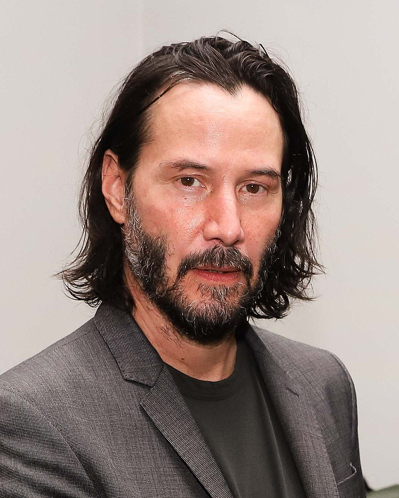
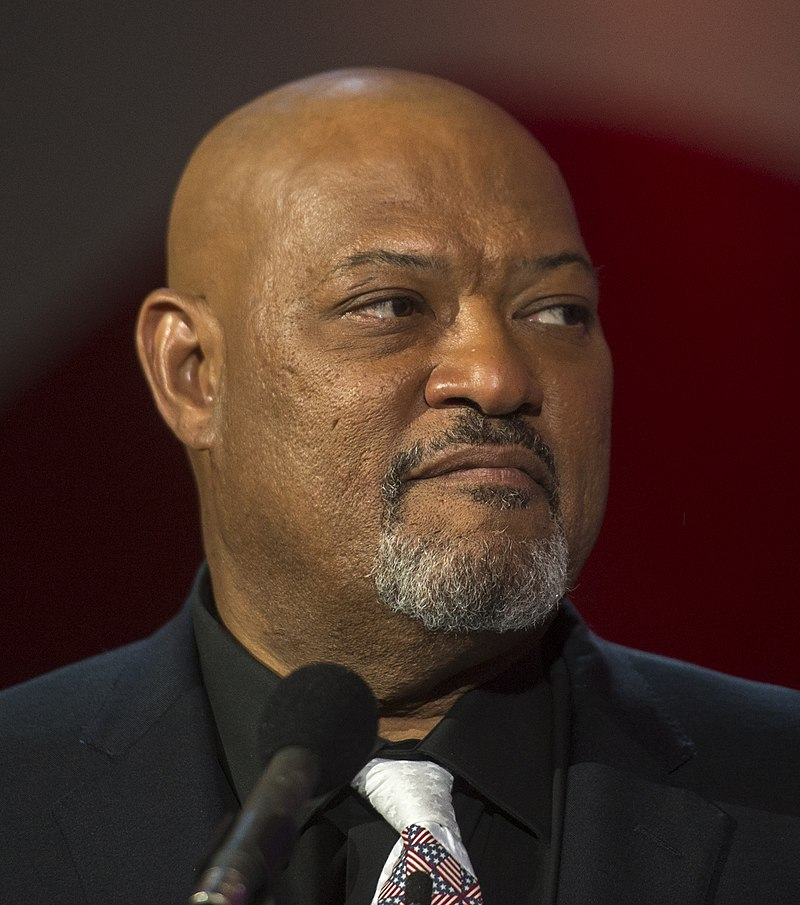
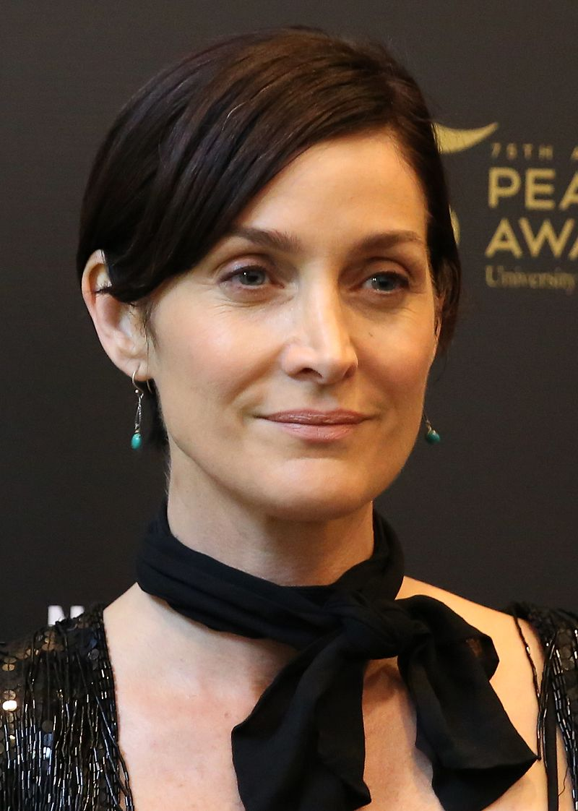

Keanu Reeves
Keanu Charles Reeves (/kiˈɑːnuː/ kee-AH-noo; born September 2, 1964) is a Canadian[a] actor. Born in Beirut, he grew up in Toronto. He began acting in theatre productions and in television films before making his feature film debut in Youngblood (1986). Reeves had his breakthrough role in the science fiction comedy Bill & Ted's Excellent Adventure (1989), and he later reprised his role in its sequels. He gained praise for playing a hustler in the independent drama My Own Private Idaho (1991), and established himself as an action hero with leading roles in Point Break (1991) and Speed (1994).
Following several box office failures, Reeves' performance in the horror film The Devil's Advocate (1997) was well received. Greater stardom came for playing Neo in the science fiction series The Matrix, beginning in 1999. He played John Constantine in Constantine (2005) and starred in the romantic drama The Lake House (2006), the science fiction thriller The Day the Earth Stood Still (2008), and the crime thriller Street Kings (2008). Following a setback, Reeves made a comeback by playing the titular assassin in the John Wick film series, beginning in 2014.
In addition to acting, Reeves has directed the film Man of Tai Chi (2013). He has played bass guitar for the band Dogstar and pursued other endeavours such as writing and philanthropy.
Laurence Fishburne
Laurence John Fishburne III[1] (born July 30, 1961) is an American actor, playwright, producer, screenwriter, and film director. He has been critically hailed for his forceful, militant, and authoritative characters in his films.[2] He is known for playing Morpheus in The Matrix trilogy (1999, 2003) Jason "Furious" Styles in the drama film Boyz n the Hood (1991), Tyrone "Mr. Clean" Miller in the war film Apocalypse Now (1979), and "The Bowery King" in the John Wick film series (2017–).
For his portrayal of Ike Turner in What's Love Got to Do With It (1993), Fishburne was nominated for an Academy Award for Best Actor. He won a Tony Award for Best Featured Actor in a Play for his performance in Two Trains Running (1992), and an Emmy Award for Outstanding Guest Actor in a Drama Series for his performance in TriBeCa (1993). Fishburne became the first African American to portray Othello in a motion picture by a major studio when he appeared in Oliver Parker's 1995 film adaptation of the Shakespeare play.
Other film credits of Fishburne include The Color Purple (1985), School Daze (1988), King of New York (1990), Deep Cover (1992), Searching for Bobby Fischer (1993), Event Horizon (1997), Akeelah and the Bee (2006), Contagion (2011), Man of Steel (2013), Batman v Superman: Dawn of Justice (2016) and Ant-Man and the Wasp (2018). On television, he starred as Dr. Raymond Langston on the CBS crime drama CSI: Crime Scene Investigation (2008–2011), as Special Agent Jack Crawford in the NBC thriller series Hannibal (2013–2015) and as Earl "Pops" Johnson in the ABC sitcom Black-ish (2014–present).
Carrie-Anne Moss
Carrie-Anne Moss (born August 21, 1967)[1] is a Canadian actress. Following early roles on television, she rose to international prominence for her role of Trinity in The Matrix series (1999–present). She has starred in Memento (2000), Red Planet (2000), Chocolat (2000), Fido (2006), Snow Cake (2006), Disturbia (2007), Unthinkable (2010), Silent Hill: Revelation (2012), and Pompeii (2014). She also portrayed Jeri Hogarth in several television series produced by Marvel Television for Netflix, most notably Jessica Jones (2015–2019).